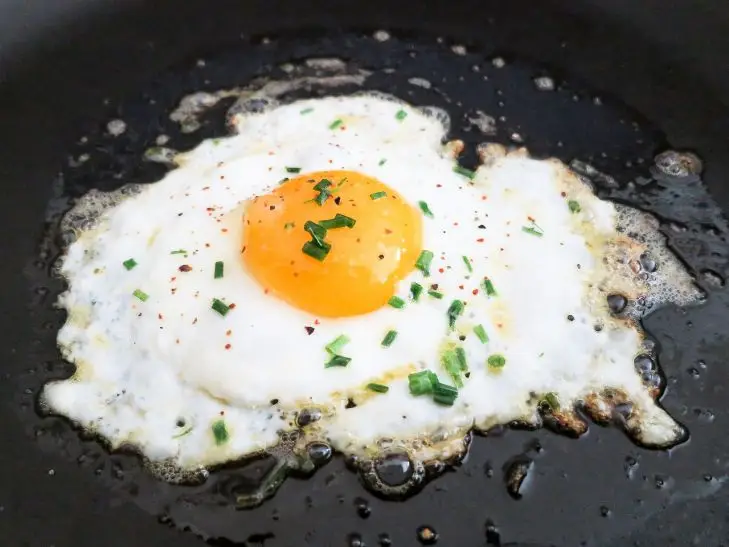
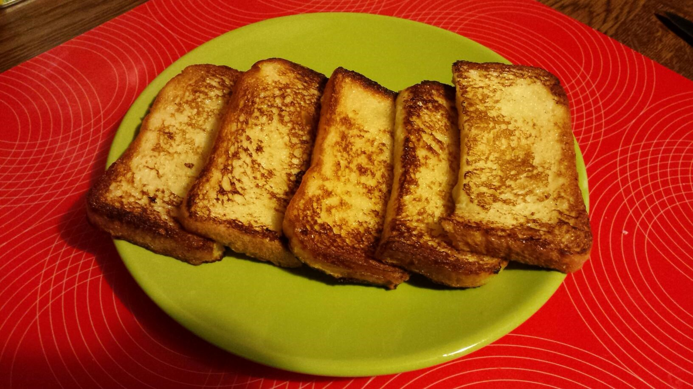
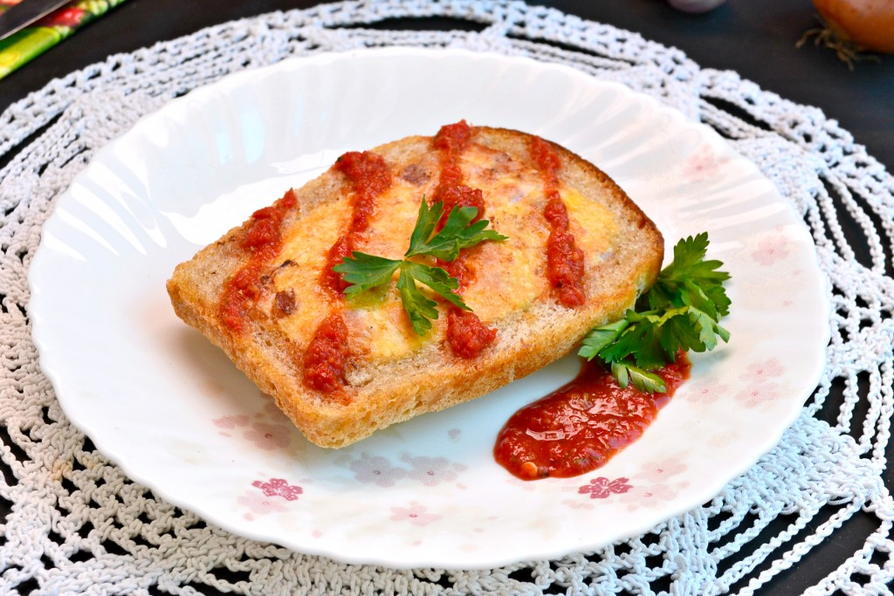
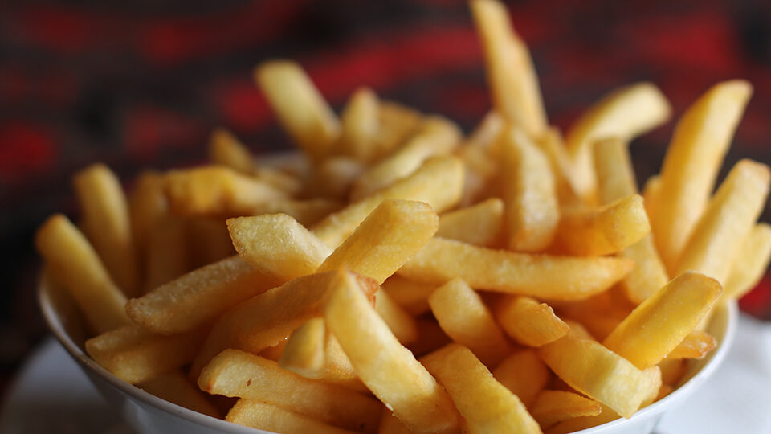
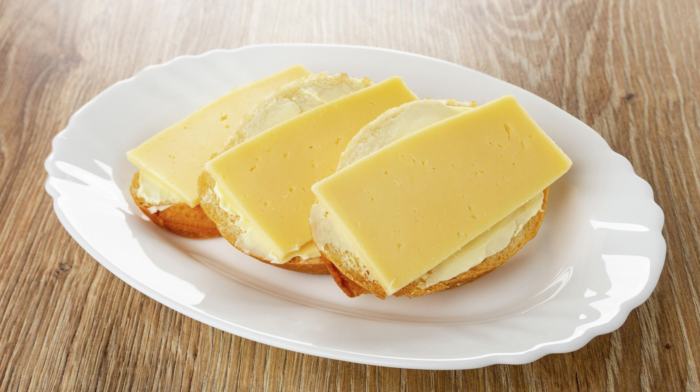

Ceptas olas
Vienkāršs un apmierinošs ēdiens, kas pagatavots no olām, kas apceptas uz pannas ar sāli un pipariem.
Sastāvdaļas: Olas, sāls, pipari.
Gatavošanas soļi:
- Cepšanas pannā salauž olas.
- Sāls un pipari pēc garšas.
- Pagaidiet, līdz baltumi kļūst balti.

Sālīti grauzdiņi
Eļļā samērcētas un ar garšvielām apkaisītas maizes šķēles, ceptas cepeškrāsnī.
Sastāvdaļas: Maize, sviests, garšvielas.
Gatavošanas soļi:
- Ietauko maizi sviestā.
- Apkaisiet grauzdiņus ar garšvielām.
- Cep cepeškrāsnī līdz zeltainam.

Mini pica
Mini picas ar tomātu mērci un rīvētu sieru, kas pagatavotas cepeškrāsnī līdz gatavībai.
Sastāvdaļas: Maize, tomātu mērce, siers.
Gatavošanas soļi:
- Plānās maizes šķēles smērē ar tomātu mērci.
- Pārkaisa ar rīvētu sieru.
- Cep līdz gatavs.

Kartupeļi frī
Kartupeļu gabaliņi apcepti eļļā un pārkaisīti ar sāli.
Sastāvdaļas:Kartupeļi, sviests, sāls.
Gatavošanas soļi:
- Kartupeļus sagriež kubiņos.
- Apcep eļļā.
- Pārkaisa ar sāli.

Siera sviestmaize
Vienkārša un garda siera sviestmaize, kas ietīta sviestmaizē.
Sastāvdaļas:Maize, siers, sviests.
Gatavošanas soļi:
- Sviestu maizi.
- Iekšā liek sieru.
- Pārklāj ar otru maizes gabalu.